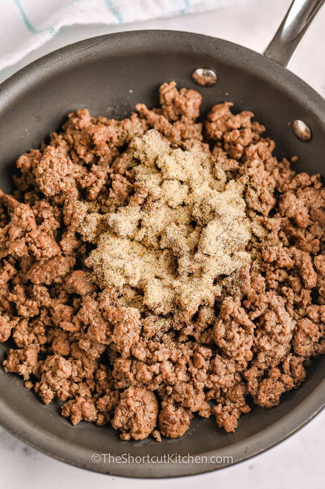
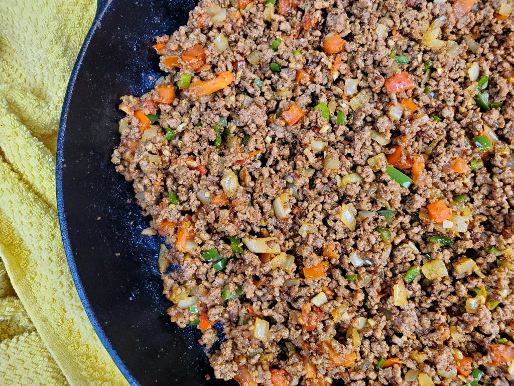
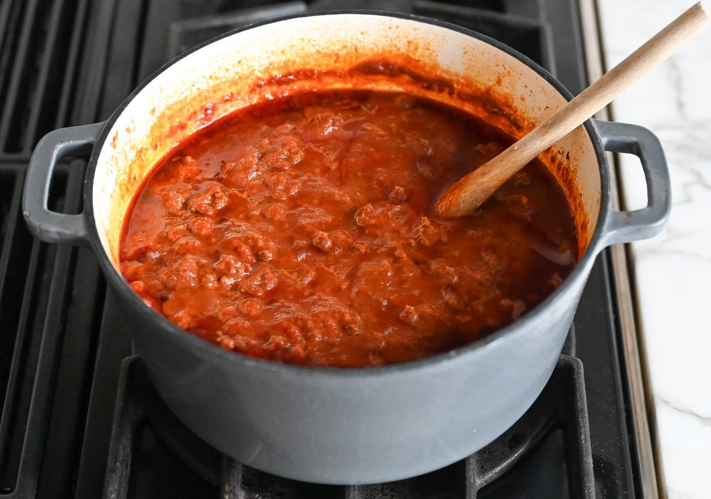
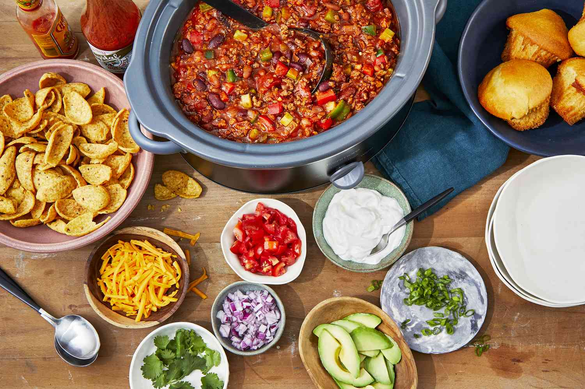

Return to index
J's To Die For Afternoon Chilli
Who even thought of making a chili?
Though the exact origin of chili has been up for interpretation, historians credit Canary Island women who migrated to San Antonio, Texas, for its creation. The dish was later popularized in the 1860s by the Chili Queens of San Antonio who sold the dish to soldiers, travelers, and cattlemen.
How long does it last in the fridge?
Generally, homemade chili (chili con carne) will stay good in the refrigerator for about 4-5 days when stored in an airtight container. However, it's important to remember that the length does chili last in the fridge, the higher the risk of spoilage and foodborne illness.
Ingredients
- 2 pounds lean ground beef
- 1 onion diced
- 1 jalapeno seeded and finely diced
- 4 cloves garlic minced
- 2 ½ tablespoons chili powder divided (or to taste)
- 1 teaspoon cumin
- 1 green bell pepper seeded and diced
- 14 ½ ounces crushed tomatoes canned
- 19 ounces kidney beans canned, drained & rinsed
- 14 ½ ounces diced tomatoes with juice
- 1 ½ cups beef broth
- 1 cup beer
- 1 tablespoon tomato paste
- 1 tablespoon brown sugar optional
- salt and pepper to taste
Instructions
Step 1 - Combine Beef and chilli powder:
Combine ground beef and 1 ½ tablespoons chili powder.

Step 2 - Brown & Drain Beef:
In a large pot, brown ground beef, onion, jalapeno, and garlic. Drain any fat.

Step 3 - Add in Remaining ingredients, boil, simmer.:
Add in remaining ingredients and bring to a boil. Reduce heat and simmer uncovered 45-60 minutes or until chili has reached desired thickness.

Step 4 - Serve:
Top with cheddar cheese, green onions, cilantro or other favorite toppings.

Return to top
Return to index